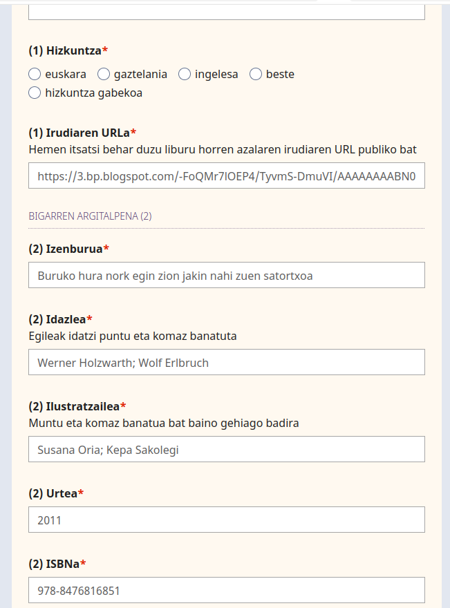
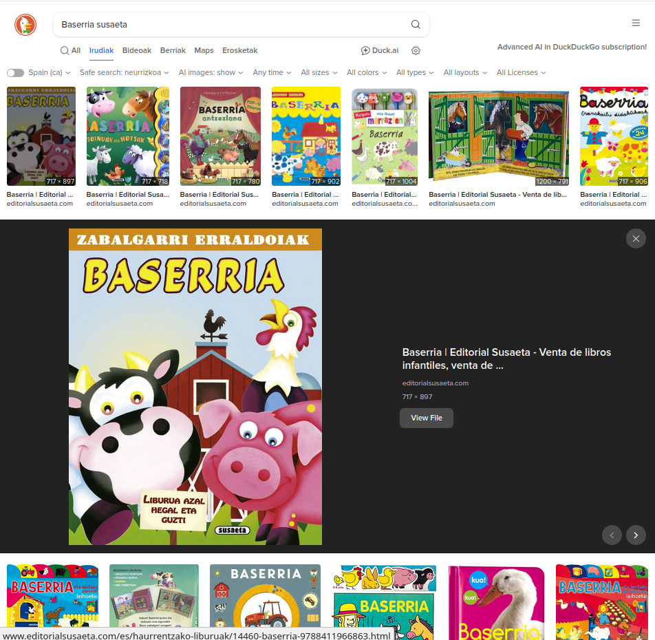
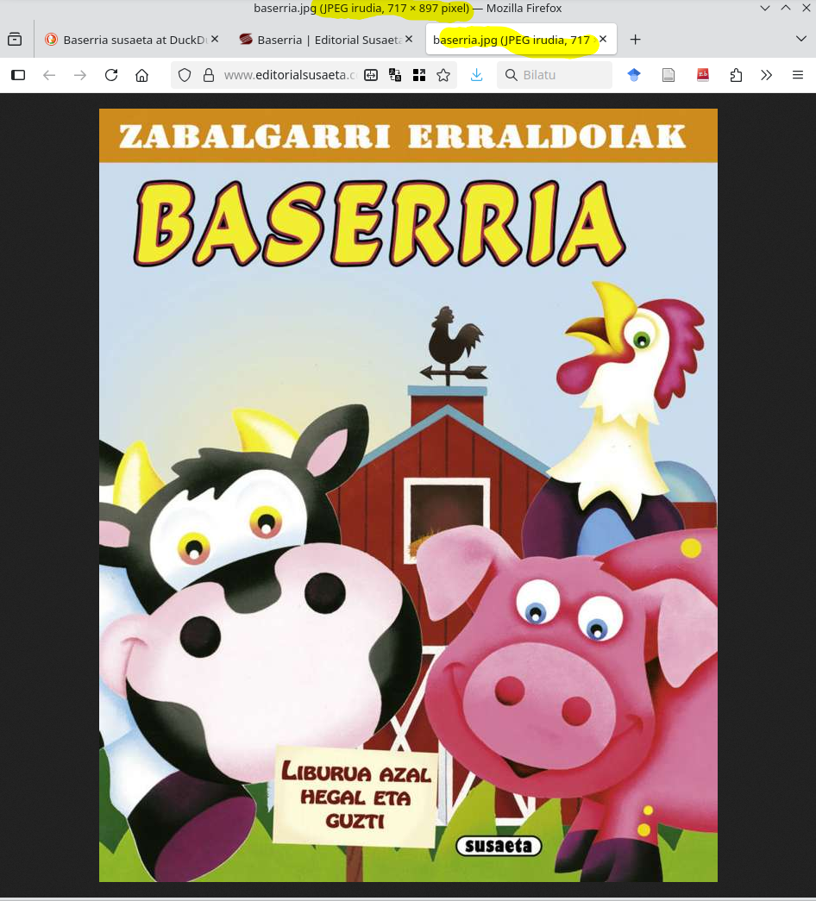
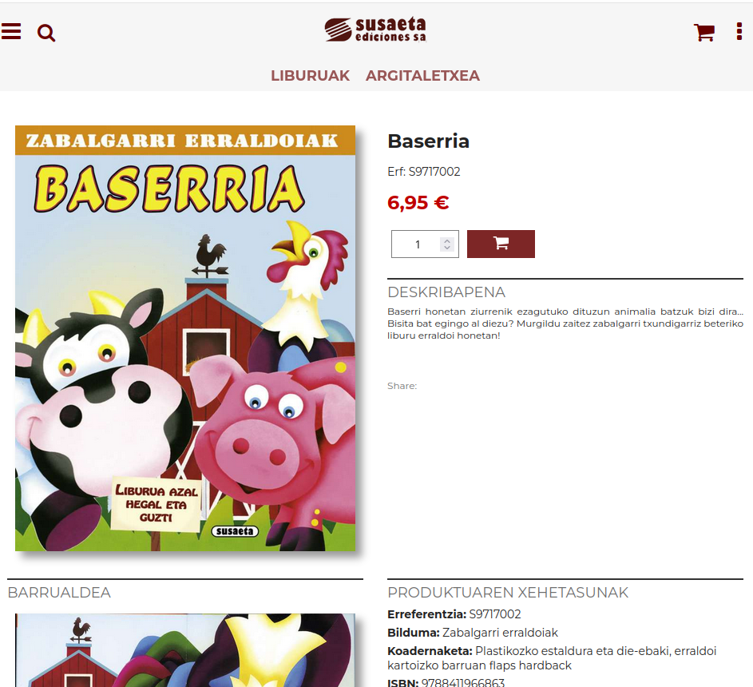

Hizkuntzaren Didaktika (HH) ikasgaiaren aurkezpena
2025-09-11
Hizkuntzaren Didaktika eta Atzerriko Hizkuntza
Irakasleak
Ikasgaia
Gure zatia (ahozko hizkuntzaren didaktika)
Edukiak eta denboralizazioa
Metodologia
Ebaluazioa
Juan Abasolo
Talde teorikoa (gaur) eta Gelako Aldretako bat (1GA).
Bulegoa: 3S40
email: juan.abasolo@ehu.eus
Telegram: @JuanAbasolo
Tutoretzak: www.labur.eus/JAbasolo-tutoretzak[HH5DAL]
Album ilustratuetara!!
Jon Kortazar Billelabeitia
Gelako aldra bi (GA2 eta GA3)
Ikasgaia
3 zati:
- HD (5 puntu)
- Atzerriko hizkuntza (4 puntu) (Ruthek eta Irenek, hori gero)
- DALak (1+0.6 puntu).
| Irakaskuntza mota | Ikasgelako eskola-orduak | Ikaslearen ikasgelaz kanpoko jardueren orduak |
|---|---|---|
| Magistrala | 6 | 9 |
| Gelako p. | 84 | 126 |
Gida ofiziala fakultateko webean duzue.
Ahozko Hizkuntzaren Didaktika
- % 50 talde lanak
- % 10 bertaratze aktiboa, epez aurkeztea…
- % 20 talde lanak
- % 20 proiektua
- % 50 azterketa
- +egokitzapena DALaren noraterkin.
Edukiak eta Denboralizazioa
| Astea | Gaia | Irakurketak | Zereginak | DAL |
|---|---|---|---|---|
| 1.a | Diziplinarteko Lana | Diziplinarteko Lanaren Gida irakurri | Idatzia | Entregagaia 1: ipuinaren aukeraketaren justifikazioa 5. asterako |
| 2.a | Hizkuntza | Hikzuntzalaritza | Barreña[1] | Ulermen gida | Tutoretza 1: ipuinen aukeraketa (DAL) |
| 3.a | Hizkuntzalaritza + Hizkuntzaren Didaktika DAL 2 ordu | Barreña[2] | Hizkuntza konparaketa | |
| 4.a | Nola ikasten du umeak berbetan | Proiektuaren aurkezpena | Guibourg. Tough. | Jabekuntzaren denbora lerroa. Egutegia. | |
| 5.a | Hizkuntzaren patologiak | Fernandez | Gaia aukeratu eta landu | Entregagaia 1 |
| 6.a | Hizkuntza patologiak | Aurkezpena | Tutoretza 2: proposamenerako ideia garatuak (DAL) | |
| 7.a | Ahozko Hizkuntza HHn | Antzuolako… Bigas. Camps. | Ulerkuntza eta lanketa itemak | |
| 8a | Ahozko hizkuntza HHn | proiektu batzuk. Curriculum Dekretua | ||
| 9.a | Murgiltze klaseak | Zehazteke | Zehazteke | |
| 10.a | Aurkezpenak (Proiektua + DAL) Birpasa |
Proiektua | Txosten idatzia (DAL) |
Metodologia
- Eskola teoriko espositiboak
- Testuen irakurketa eta lanketak
- Klase praktikoak
- Etxean egin beharreko lanketak
Ekintza praktiko gehienek taldeko zein banakako zereginak izango dituzte.
Ebaluazioa
- Talde lanak
- Talde handia 3 taldetan
- GAko 6 lan talde (DALekoak izan daitezke).
- Banakako idatzizko azterketa
[HH5DAL]
Bai, badakigu, atzo irakaslerik ez
2GAko taldeak osatu barik
Telegramen kanala HDinformazioa


Tomi Ungerer ikastetxeetan | Tolosako Udala [*]
EHUko liburutegi nagusiko palkak 2025ean, Haur Hezkuntzarako-eta literaturakoak
Liburuen txostena: Galdetegitik
Bete beharrekoa[*]
Irudiaren URLa. Ariketa
Aukeratu liburu bat, nahi duzuna.
Aurkitu haren azalaren irudia
Kopiatu irudiaren URLa
Itsatsi beste nabigatzaile batean

OK
Irudi hutsa zabaldu bada, EDERTO! Hori donk-eta!!

Ko
Irudia baino beste ezer ikusten bada (testua, deskribapena, 404 mezua…), ez duzu irudiaren URLa lortu.
